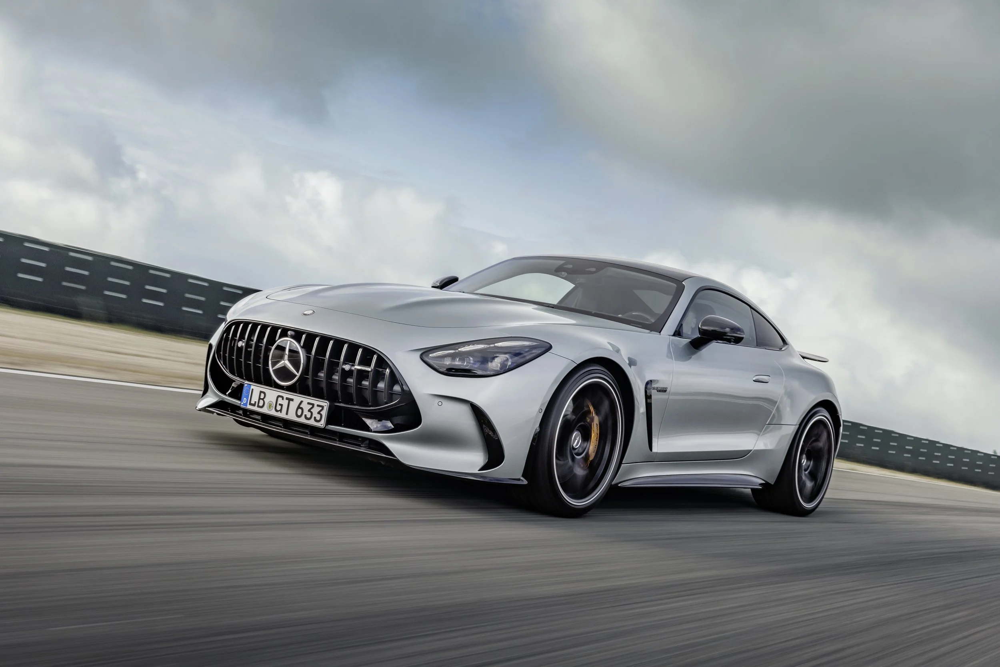

Niemiecka marka samochodów luksusowych

Obraz przedstawia jeden z samochodów Mercedesa.
Mercedes-Benz to niemiecka marka samochodów, która produkuje luksusowe auta. Firma została założona w 1926 roku. Mercedes jest znany z wysokiej jakości, bezpieczeństwa i nowoczesnych technologii.